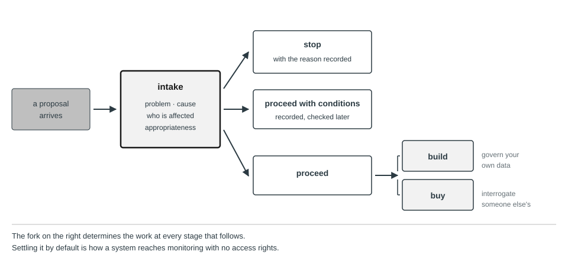
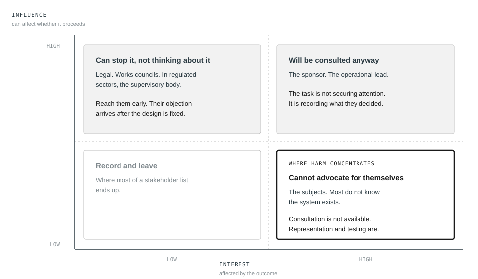

4. Defining the Problem and Use Case
In this book’s hypothetical Calloway case, Calloway Industries did not decide to buy an AI hiring tool. A recruiting manager attended a conference, saw a demonstration, and came back with a proposal. The proposal described the product. It listed the features, the vendor’s accuracy claims, the integration path, and the licence cost. It did not describe a problem.
Eleven months later the tool was screening applications for warehouse and logistics roles across four states, and nobody at Calloway could say what it was supposed to have improved. Time to hire had not moved. Quality of hire was not measured before the tool arrived and so could not be compared afterwards. What had changed was that four thousand applications a month were now being ranked by a system whose behaviour nobody in the building could account for.
This chapter is about the work that Calloway skipped. Its omissions are among the hardest to repair later, because a system that should not have been built cannot be fixed by testing it more carefully.
What you will be able to do
- State a business need in terms of a current state, a desired state, and the gap between them, before any proposal names a technology
- Gather what stakeholders actually need, distinguishing it from what they first say they want
- Convert a proposed solution into a problem statement with success criteria that can be measured
- Work a root cause analysis to a depth where the branches separate, and recognize when the useful branch is not the one AI addresses
- Identify who is affected by a system, including the parties who will never know it ran
- Assess whether a use case is appropriate on four grounds, and recommend against building when it is not
- Distinguish what each subsequent lifecycle stage demands when you build a system from what it demands when you buy one
4.1 Naming the gap before naming a solution
Calloway’s recruiting manager did not arrive at a vendor demonstration by accident. Something in the recruiting function was already wrong, and had been wrong for long enough that a conference pitch looked like relief. A proposal that reaches governance already assumes a solution, and that assumption was made before governance saw it, which is exactly why so many proposals arrive pre-shaped around a product. By the time a proposal is written down, the gap it claims to close has usually been reasoned about only once, informally, by whoever wrote it, and that reasoning rarely survives contact with a vendor’s roadmap.
The gap is worth naming on its own terms before any solution enters the picture. Current state is where the organization is now, stated in the same measurable terms a problem statement demands. Calloway’s current state, reconstructed after the fact, was 260 hours a month of recruiter capacity short against a fixed volume of applications, with 38 per cent of applicants unanswered inside thirty days. Desired state is where the organization wants to be, stated at a level rather than as a direction. Below seven days to first response, without the probation pass rate falling below 71 per cent. The gap is the distance between the two, and naming it precisely is what makes visible that more than one path could close it.
A gap named this early can be closed several ways. Raising the bar for what counts as a complete application, changing where roles are advertised, adding contract recruiters for a seasonal peak, and licensing a screening tool are all live candidates once the gap is stated instead of assumed. Some routes require little AI-specific governance at all. Others, including a staffing change or an advertising change, still carry their own labor, privacy, or procurement duties, so naming the gap does not exempt the alternatives from scrutiny, it only makes the comparison possible. Working out which candidate route to take, and what it would actually require to execute, is a small analysis worth doing deliberately rather than skipping to whichever option a vendor happened to pitch first.
That small analysis is worth the time it takes, because the comparison between routes has to happen before anyone is attached to one of them. A route chosen after a vendor relationship exists, or after a budget line has been approved for a specific product, is a route being rationalized, not compared.
Comparing routes also exposes that a real gap is rarely closed in one step. Calloway’s route to closing 260 hours of recruiter capacity against fixed volume might run through a pilot confined to one warehouse region before a four-state rollout, or through a phased threshold change tested for two hiring cycles before it becomes permanent. Each intermediate state is a point where the organization can check whether the gap is actually closing and whether anything unexpected has shown up. Naming those points in advance is cheaper than discovering after full deployment that the chosen route needed a step nobody planned for, and Chapter 8 returns to staged rollout as a deployment decision in its own right.
That comparison is what intake, starting in the next section, cannot fully recover once it has been skipped. Intake still evaluates a proposal once it exists, and its seven questions work whether or not the proposal was shaped by the reasoning above. But an organization whose proposals routinely arrive already shaped around one vendor’s offering has usually skipped this gap-naming step, and by the time intake sees the proposal, the comparison against other routes has already been foreclosed by what got demonstrated at a conference.
4.2 Intake
Governance that begins when a system is ready for release is not governance. It is inspection, and inspection at that point can only pass, fail, or delay something that has already consumed a year of budget and carries the reputation of the people who built it. The realistic outcome is a conditional pass with findings, the least useful thing a governance function produces.
Intake is the process by which a proposed AI system enters governance before it is built or bought. It exists to catch the systems that should not proceed at all, and to attach the right level of scrutiny to the ones that should.
An intake process that asks for too much becomes a form people route around. One that asks too little produces a queue nobody can triage. The seven questions below earn their place because each one, left unasked, produces a specific failure later.
What decision or task is this system involved in? Not what the product does, but what happens differently in the organization because it exists. Calloway’s proposal could not answer this without describing software, and the consequence appeared eleven months later when nobody could say what had improved. A proposal that cannot name the decision it touches cannot be classified, because classification in Chapter 3 depends on consequence, and consequence is a property of the decision, not of the technology.
Who is affected by the output, and do they know? The second half does most of the work. Where the answer is that they do not know, several later obligations follow at once, notice, an explanation route, and a testing programme designed to detect effects that nobody will report. Section 4.5 develops how to answer it.
What is the consequence of being wrong, and can it be reversed? These are the two dimensions that drive classification, and asking them at intake means the classification exists before design choices foreclose the options. A system classified after the architecture is settled will be classified around what was built.
Are we building this, buying it, or building on something we did not train? Left unanswered, this does not stay unanswered. It gets settled by whoever signs the contract, and the organization discovers the answer at monitoring, when it turns out nobody negotiated access to the logs. Section 4.9 sets out what follows from each path.
What would tell us this worked? If the answer is that the system will be adopted, or that it will be accurate, there are no success criteria and section 4.3 applies. Adoption measures whether people used it. Accuracy measures whether the model matched the data it was trained on, which is not the same as whether it is right about the people it will now be applied to. Neither measures whether the problem was solved.
What data will it use, and where did that data come from? A provisional answer suffices here. What intake needs is enough to know whether the data plausibly exists and whether its provenance is knowable at all, because a proposal resting on data the organization cannot lawfully use is one that should stop now, not after acquisition. Chapter 5 makes this demanding.
Who is accountable for the decision to proceed? A name, not a committee. A committee can approve and cannot be asked afterwards what it was thinking. This record is the beginning of the system record described in Chapter 3, and it is the reason that record can later show who decided what on what basis.
These seven are a floor, not the complete field set a governance record eventually needs. They are the questions that determine whether a proposal should be classified and scrutinized at all, which is what intake has to decide before anything else. Once a proposal proceeds, the record built from it needs four further fields. A legal jurisdiction and actor-role screen, since consequence and geography together decide which regulations reach the system. An explicit statement of the authority and permissions the system will have. A review date, and an expiry, so the record does not describe a system that has since changed. Appendix C’s Template 1 carries all eleven; the seven questions here are what a requester answers to start it.
Proportionate scrutiny
Applying the same process to every proposal guarantees one of two outcomes. Either the process is light enough for a chatbot that drafts internal announcements, in which case it is too light for a system that screens job applicants. Or it is heavy enough for the screening system, in which case teams will avoid it for everything smaller.
The resolution is to fix the questions and vary what the answers trigger. Every proposal answers the same seven. What differs is the depth of evidence required, who reviews it, and what must exist before the system runs.
At the lowest level, a self-assessment is recorded, an automated or brief qualified screen checks it against a short list of non-compensable triggers, meaning conditions that no strength elsewhere offsets, a prohibited practice, a regulated activity, personal-data processing, a known cybersecurity exposure, a supplier restriction, and the system proceeds if none fire. Nobody conducts a full review, but the trigger screen exists precisely because an internal low tier is not a legal exemption. The value of the record is that the system is now in the inventory and can be found when the rules change or a sampled second-line check reaches it. At the middle level, a governance reviewer reads the assessment and can ask for more, an impact assessment is produced, and the system carries defined monitoring. At the highest level, an independent party who did not build the system evaluates it, the impact assessment is reviewed, not filed, deployment is staged, and someone named holds authority to halt it.
The levels come from the classification, which is why the classification is made at intake instead of derived later. An organization that assigns scrutiny by seniority of the requester, or by budget, has a process that responds to influence, not to consequence.
What intake decides
Intake produces one of three outcomes, and all three have to be genuinely reachable. A proposal may stop, with the reason recorded so that the same proposal arriving in eighteen months is assessed against what was decided, not relitigated from nothing. It may proceed with conditions, which are written down and checked later instead of remembered, each with a named owner, a due date, and a stated consequence for the condition going unmet rather than remaining open indefinitely. Or it may proceed, at which point the build or buy fork determines the work at every stage that follows. These three are the outcomes this book follows through the running cases. A live process also needs the ability to return a proposal for missing information, defer it pending a specific event, or refer it to a specialist reviewer, instead of forcing every incomplete proposal into a premature stop or approval.

Section 4.9 returns to all three, because the first is the one organizations find hardest to reach and the third is the one they most often leave undecided.
4.3 Problem statements
The recruiting manager at Calloway arrived with a solution. This is the ordinary case, and the discipline that governance contributes is refusing to accept a solution as a statement of a problem.
Consider two framings of the situation section 4.1 already named, written out in full so the difference between them is visible.
The first. We need an AI screening tool to handle our application volume.
The second. Warehouse roles receive four thousand applications a month against forty openings. Recruiters spend an average of nine minutes per application on an initial pass, which consumes 600 hours a month against a team capacity of 340. The backlog means that 38 per cent of applicants receive no response within thirty days, and our exit interviews with declined candidates indicate this is the largest source of reputational complaint. We want to reduce time to first response below seven days without reducing the proportion of hires who pass their probationary period, currently 71 per cent.
The second framing takes longer to write and it is worth the time, because of what it makes possible.
It makes the proposal falsifiable. There is now something that can be measured before and after, so the question of whether the system worked has an answer.
It exposes the constraint. The bottleneck is 260 hours a month of recruiter capacity against a fixed volume, which in this case is also the gap named in 4.1. The two coincide here and need not in general; a gap is the distance to be closed, a constraint is what prevents it closing on its own. Once that is visible, screening automation is one option among several. Raising the threshold for what counts as a complete application, changing where the roles are advertised, or adding two contract recruiters for the peak season all address the same constraint, and two of them carry little AI-specific governance burden, though not none. Any operational change can create its own labor, privacy, or procurement duties worth checking, not assumed away.
It names the thing that must not get worse. A system that cuts response time to two days while dropping probation pass rates to 55 per cent has failed, and without the second clause it would have been reported as a success.
And it makes rejection possible on the proposal’s own terms. If the vendor’s tool improves response time but cannot demonstrate anything about hire quality, the second framing gives you the grounds to decline. The first gives you nothing, because a tool that handles volume is by definition a tool that handles volume.
A usable problem statement has four parts, and each has a characteristic way of going wrong.
The current state, in numbers somebody can verify. It fails when the numbers are estimates nobody sourced, because the comparison you make in a year will be against a figure that was never true.
The desired state, in the same terms. It fails when stated as a direction rather than a level. Reducing response time is not a target; below seven days is. A direction cannot be missed, which is why proposals prefer it.
The constraint that prevents the second from following from the first. This is the part most often omitted, and omitting it is what makes a solution look inevitable. Calloway’s constraint is 260 hours of recruiter capacity against fixed volume. Once it is named, screening automation is one way to relieve it and there are others. Left unnamed, the proposal on the table is the only option because it is the only one that has been described.
What must not degrade. It fails when nobody asks what the system could damage while succeeding at its stated purpose. A tool that cuts response time to two days while dropping probation pass rates to 55 per cent has failed, and without this clause it would be reported as a success and the failure would surface as turnover eighteen months later, attributed to something else.
Note what the strong framing does not contain. It does not mention AI, and a statement that cannot be written without naming the technology is describing a purchase, not a problem.
4.4 Root cause analysis
Problem statements describe a situation. They do not explain why it persists, and a governance function that stops at the description will approve systems aimed at the wrong layer.
A clinic asks for a system to predict which patients will miss appointments, so that those slots can be double-booked. The request is coherent, the data exists, and comparable systems are in use elsewhere. Before assessing the model, ask why patients miss appointments, and keep asking.
Why do patients miss appointments? Because a substantial proportion do not attend and do not cancel.
Why do they not cancel? Cancellation requires a phone call during clinic hours, and the line has a median wait of eleven minutes.
Why is the line the only route? The scheduling system has no patient-facing interface, because it was procured in 2011 as an internal tool and the module that would provide one was never licensed.
Why has it not been licensed since? The cost sits with facilities, the benefit accrues to clinical operations, and no budget cycle has assigned it to either.
Why has nobody escalated it? Missed appointments are reported as a clinical utilisation metric, and utilisation is managed by filling slots rather than by reducing non-attendance.
Five levels down, this chain terminates at a budget boundary and a metric that rewards the workaround, though as the next section shows, a different second question would have produced a different terminus equally worth acting on. The AI system addresses none of what this chain found. It manages the consequence of a cancellation route that does not work, and it does so by predicting which patients will fail to use it. The population it will predict most confidently is the population that finds an eleven-minute daytime phone call hardest, which is a group already defined by inflexible working hours and limited phone access. Double-booking their slots means they arrive to find their appointment given away.
This is the shape of the argument that governance produces value rather than friction. This particular analysis took an afternoon, though a more contested or less documented chain can take longer. It surfaced a licence purchase that solves the problem at the layer where it originates, and it prevented a system that would have concentrated its errors on the patients least able to absorb them.
Not every branch terminates outside AI. A clinic where non-attendance is unpredictable and evenly distributed may have a real forecasting problem. The point is not that AI is usually the wrong answer. The point is that the question is rarely asked, and a proposal that arrives naming its own solution has skipped it.
Three things govern whether the analysis is worth anything.
Know when to stop. Every chain eventually reaches something outside the organization’s control, and continuing past that point produces true statements of no use. Underfunding of public health explains the clinic’s position and cannot be acted on by anyone in the room. The useful terminus is the last cause somebody present could change, which in the clinic is the licence and the metric. Stopping earlier leaves the problem intact; stopping later converts an analysis into a complaint.
Follow more than one chain. The sequence above is the one the analysis happened to take, and a different second question produces a different terminus. Ask instead why non-attendance matters and the chain runs through slot utilisation, capacity planning, and the decision to schedule at fixed intervals rather than in blocks. Both chains are true. An analysis that follows only the first has found a cause rather than the cause, and the way to tell them apart is to work at least two and compare where they land.
Distinguish causes from conditions. The eleven-minute phone wait causes missed appointments in the sense that removing it would reduce them. That some patients have inflexible working hours is a condition, real, relevant, and not something the clinic changes. Conditions belong in the analysis because they determine who the causes fall on, which is exactly what makes the predictive system’s errors land where they do. They do not belong in the list of things to fix.
4.5 Identifying who is affected
Root cause analysis in 4.4 showed that conditions determine who a problem’s causes fall on. Naming those parties precisely is the next task. Governance frameworks call this identifying stakeholders, and an organization that does it without discipline ends up listing the people in the room. The parties who matter most are usually absent, and the reason is structural, not careless.
Four groups warrant separate treatment.
Users operate the system or act on its output. Calloway’s recruiters are users. They are easy to identify, they are consulted, and their concerns are heard because they are colleagues.
The system produces an output about its subjects, and Calloway’s applicants are the subjects here. There are four thousand a month, none of them is in the building, and most will never learn that a model ranked them. This is the defining feature of the category, not an incidental one. Subjects usually do not know they are subjects, which is why they cannot raise the concerns that would be most useful to hear.
Third parties are affected without being either. The staffing agency whose candidates are ranked lower as a group. The successful hire’s new colleagues, who inherit whatever the screening let through. The competitor whose applicants are the ones Calloway rejects.
At the aggregate level, society absorbs what no individual assessment captures. If every large logistics employer in a region adopts similar screening trained on similar histories, a candidate rejected by one is likely to be rejected by all, and the individual effect of each system understates the joint effect of the set.
Finding the parties you cannot see
Users and sponsors identify themselves. Subjects and third parties have to be derived, and there is a procedure for it that works better than asking around.
Follow the output. Take what the system emits and trace where it goes, one step at a time, asking at each step who is now different because of it. TalentScreen, the screening tool Calloway is considering, emits a ranking. The ranking goes to a recruiter, who is a user. The recruiter’s shortlist determines who is interviewed, so every applicant is a subject, including the ones nobody looks at. The interview outcome determines who is hired, so the successful candidate’s future colleagues are affected. The rejected applicant may reapply, and if the system retains a record, the second rejection is not independent of the first. That last step is easy to miss and produces one of the more serious effects, because a candidate can be excluded permanently by a decision made once.
Then follow the inputs backwards. Whose data trained this, and are they a different population from the people it will be applied to? Calloway’s model learned from applicants it previously advanced. Those people are not subjects of the deployed system, but their historical treatment determines its behaviour, which is a relationship worth recording even though no obligation attaches to it.
Finally, ask what happens if everyone does this. A single employer’s screening tool affects its own applicants. An industry converging on similar tools trained on similar histories produces a candidate who is rejected everywhere for the same reason, and no individual assessment of any one system will show it.
Influence and interest
For the parties you have identified, two dimensions determine what to do about them.
Influence is the capacity to affect whether and how the system proceeds. Interest is the degree to which the outcome affects them, weighed by severity and by whether the party affected can absorb or contest a wrong outcome, not merely by how often a decision touches them. The dimensions are independent, which is what makes the pairing useful. The parties with the most at stake frequently have the least ability to act on it.
High influence and high interest describes the project sponsor and the operational lead. They will be consulted whether or not you plan it. The governance task is not securing their attention but recording what they decided and on what basis, because their reasoning is what a later reviewer will need and what nobody thinks to write down at the time.
High influence and low interest describes the legal function, the works council, and in regulated sectors the supervisory body. They can stop the system and they are not thinking about it. Reaching them early is cheap and reaching them late is expensive, and the asymmetry is worth understanding. An objection raised at intake changes a paragraph in a proposal. The same objection raised at release changes a system that has been built, integrated, and staffed, so the realistic response is a mitigation bolted on, not the design change that would have been available three months earlier.
Low influence and high interest describes the subjects, and this quadrant is where harm concentrates. Its defining feature is not that its occupants are ignored but that they cannot participate. Nothing they do changes the outcome, and most do not know there is an outcome to change. Consultation is therefore unavailable, and something has to substitute for it.
Two things do. The first is representation, meaning a named person whose task in the process is to state what this group would say if it were present. This is not a symbolic role and it fails when treated as one. Done properly it requires someone who has looked at how the system will actually reach these people, who has read whatever complaints or appeals the predecessor process generated, and who has standing to object, not only to comment. Where an organization has an ombudsman, a customer advocate, or a union representative, that person is usually better placed than anyone in the project.
The second is testing designed around what this group would have reported. If applicants cannot tell you that the system disadvantages people with employment gaps, the testing programme has to look for it, which means the effects you would have heard about become test cases in Chapter 7. Representation without that testing produces a well-intentioned advocate with no evidence.
Low influence and low interest is where most of a stakeholder list ends up, and a party genuinely unaffected in any way touching their rights or safety can be recorded there and left alone. That placement holds only if whoever weighed interest actually asked about rights and vulnerability rather than only for how often or how visibly a decision touches the party. Someone rarely affected but severely so when they are belongs in the quadrant that matters, not this one. Recording the low quadrant still matters, because the reason a party was placed there is the thing a later reviewer will want when circumstances change.
The quadrant that matters is the third. A process that consults the first two and calls the exercise complete has consulted the people who were going to be consulted anyway.

4.6 Getting the requirement right, not just the person right
Calloway’s legal function, asked what it needed from a screening tool, said the system had to be fair. Recorded as written, that sentence produced nothing a later reviewer could test the system against. Fair to whom, measured how, checked against what threshold, was left for someone downstream to guess at, and the guess that was eventually made, a single aggregate pass rate across all applicants, was not what the legal function meant. Had someone sat with the legal function and asked what a fair outcome would look like in one specific rejected case, what surfaced would have been for the pass rate not to diverge by more than a stated margin across the demographic groups Title VII protects, checked before each hiring cycle, with a named reviewer authorized to halt the rollout if it did. “The system has to be fair” was the sentence that pointed at that requirement. It was not the requirement itself.
The distance between what the legal function said and what it needed is not a matter of the legal function being unclear. Someone asked what they need from a system will usually describe the outcome they want in terms that make sense to them and skip the operational detail, because they are not thinking in the vocabulary a requirement needs and have no reason to. A governance record built from the first sentence alone tests against whatever the builder privately decided “fair” meant, because nobody did the work of closing the distance between what was said and what was needed.
Closing that distance takes more than one conversation, for a reason visible once Calloway asked past the legal function. A recruiter wanted the system to reduce the volume reaching a human reviewer. A works council representative wanted every rejection to be explainable to the applicant on request. The three statements did not contradict each other, but a requirement written from only one of them would have missed what the other two needed. Reconciling them into one specification means checking each one against what would happen to the other two if only it were satisfied. A system tuned purely for volume reduction can widen the margin an aggregate pass rate hides, undoing the legal function’s requirement. A system tuned purely for explainability can slow the recruiter down past the point that justified building it at all. Where the three genuinely conflict, the conflict is a finding for whoever accepts the residual risk in section 4.8’s assessment, not something resolved quietly by dropping one requirement and not recording that it was dropped.
Recording what a stakeholder said instead of what they meant is the first of two failures that account for most of what goes wrong closing that distance, and both are checkable before a requirement is finalized. A recruiter who says the system should “flag anything unusual” is not asking for anomaly detection in the technical sense. Asking what an unusual case looked like the last time one slipped through, and what happened as a result, surfaced the actual concern in Calloway’s case. Incomplete applications were advancing past a stage that should have caught them, a narrower and more testable requirement than “flag anything unusual” ever was. The second failure is treating the first answer as final. What a stakeholder says in a first conversation is a draft. Reading it back in the stakeholder’s own terms, rather than the requirement’s eventual technical language, catches the case where a detail was misheard or a qualification dropped before it hardens into a written requirement nobody revisits.
Neither failure can be checked, though, for the people who cannot be asked in the first place. Some of the people whose needs matter most cannot be sat down and asked at all, for the same reason section 4.5 gave for TalentScreen’s applicants. Chapter 14 develops what to do when direct engagement is not available, representation, structured advocacy, and evidence drawn from comparable systems and complaint records among the methods, and what each substitute can and cannot recover.
4.7 Evaluating appropriateness
A use case can be well specified, correctly aimed at a real cause, and still be one that should not proceed. Four grounds carry most of the weight. The second is the one most often left implicit, because it is the hardest of the four to state without committing to a measure.
The first is data sufficiency, which has three components that fail independently.
Volume is the one people check. There must be enough examples for a model to learn a pattern instead of memorising noise, and how much is enough depends on how many things the model must distinguish. This is the component least likely to be the binding constraint, and it is the one proposals cite.
Coverage is whether the data spans the situations the system will meet. A model trained on applications for warehouse roles in three states will be applied to a fourth, and the question is whether anything about that state’s labour market differs in a way the model has never seen. Coverage failures are invisible in aggregate accuracy, because the uncovered cases are rare in the test set for the same reason they were rare in training.
The third is the one that sinks Calloway. The failure has a name worth knowing, the selective labels problem. The organization has ten years of hiring history, which sounds ample. What that history records is which applicants Calloway advanced and how they performed. It records nothing about the applicants Calloway rejected, because they never got the chance to perform. The model therefore learns from a sample selected by the very process it is meant to replace, and it can only learn to reproduce that process’s decisions. If the old screening was systematically wrong about a group, the data contains no evidence of the error, because the counter-examples were never hired.
This is why a proposal can be data-rich and still fail on sufficiency. Sufficiency turns on coverage of the outcomes you care about across the population you will apply the system to. Historical decision records rarely provide it, because they record only the cases the previous process let through. Chapter 5 develops what can be done about it.
The second is objective specifiability, meaning whether what you want can be stated precisely enough to optimize against. The failure here has a characteristic shape. What an organization wants is usually not measurable, so a measurable stand-in is chosen, and the system then optimises the stand-in.
A proxy is a measurable quantity used in place of the outcome an organization actually wants. A proxy typically diverges from its target, and governing an AI system means testing where and by how much, rather than assuming the divergence away.
Calloway wants to hire people who will do the job well and stay. What it has is which past applicants were hired and how long they remained. The system therefore learns to predict resemblance to people Calloway previously hired, a different thing wearing the same name. The divergence is often not correctable, because the better measure either does not exist, takes years to observe, or costs more to collect than the decision is worth. Which of the three applies is worth recording, since the first is a permanent condition and the other two are budget decisions somebody made. What governance requires is that the gap is stated, that a named person has accepted it for this use, and that testing looks specifically for the ways the two come apart. An organization that has not noticed it is using a proxy will optimize the stand-in with great efficiency and report success.
Objective specifiability works differently across the three kinds of system Chapter 1 distinguished, predictive, generative, and agentic, and the difference determines what can be assessed at this stage at all. A predictive system has a target that will eventually be observable, so the question is whether the available proxy is close enough to it. Calloway’s is answerable, if uncomfortably. A generative system has no target of that kind. There is no fact of the matter about whether a drafted job description was the right one, so the specifiable objective becomes a set of properties the output must have, not an outcome it must match. An agentic system has an objective expressed as an action taken in the world, which means the specification has to state what good looks like and what the system is permitted to do while pursuing it. A proposal to have the scheduling component send rejections without review is not a proposal about accuracy at all. It is a proposal about authority, and it should be assessed as one.
The third ground is benefit proportionality, meaning whether the expected benefit justifies the risk introduced. The difficulty is that the two sides are measured in different units, and no formula converts between them.
Run this comparison only after a prior, non-negotiable check. Some harms are not to be weighed against any benefit at all, because they cross a legal prohibition, a safety floor, or a right the organization has decided not to trade off regardless of magnitude. Where a use case crosses that kind of floor, the analysis stops there instead of proceeding to a benefit comparison. Where it does not, what can be done is to state both concretely and let the comparison be made in the open. Calloway’s benefit is 260 recruiter hours a month, which has a wage cost that can be calculated. The exposure is four thousand consequential decisions a month about people’s access to work, of which some proportion will be wrong in ways the applicant cannot detect or contest. Writing those two sentences next to each other is often enough, because a proportionality claim that looks obvious in a slide deck frequently does not survive being written down in specific terms.
Three questions sharpen it. Does the benefit accrue to the same parties who bear the risk, or is it captured by one group and borne by another? Calloway captures the saving; applicants bear the error. Could a smaller version of the system capture most of the benefit with less exposure, such as ranking only within the pool a recruiter would have reviewed anyway, instead of filtering the pool? And what happens to the benefit if the risk controls work, since a system that only pays for itself when nobody reviews its output is not a proportionate system but an unsupervised one.
The fourth is value alignment, meaning whether the system comports with what the organization says it stands for. Stated that way it is close to useless, because published values are drafted to be agreeable and almost nothing contradicts them directly.
The operative version is narrower and harder to evade. Describe the system accurately to the people it will be applied to, in terms they would use, and see whether the description is one the organization is willing to give. Calloway’s would read as follows. A model trained on our past hiring decisions ranks your application, and applications ranked low are not read by a person. That is accurate and Calloway would not have put it on the careers page.
The gap between what an organization is doing and what it is prepared to say it is doing is diagnostic. Sometimes it reveals that the system is defensible and the description was clumsy, in which case the fix is the description. Sometimes it reveals a practice the organization has not examined, and testing will not surface it because nothing is malfunctioning. Value alignment is the only one of the four grounds that catches a system working exactly as designed.
Treat the disclosure question as a diagnostic, not proof, in either direction. An organization can disclose a harmful or unlawful practice without ever having examined it, and it can hesitate to disclose a defensible practice for reasons unrelated to its merits, because the plain-language description is imprecise, or because the detail is confidential or security-sensitive. A gap between practice and disclosure is a reason to look closer, at the practice itself, at whether it is consistent with the organization’s specific commitments and legal duties, and at evidence from the people it affects, not a verdict to stop at.
4.8 Recording the assessment
The work in this chapter produces conclusions someone has to stand behind. An impact assessment is the artifact that records them, and two are required by name.
Data protection law has required a data protection impact assessment for high-risk processing since well before AI-specific rules existed. It examines processing likely to create high risk for people’s rights and freedoms. It describes the processing and its purposes, assesses necessity and proportionality, evaluates risks to the people affected, and records the measures addressing those risks.
The AI Act adds a fundamental rights impact assessment under Article 27, and its scope is narrower than the Act’s high-risk category but wider than is often assumed. It binds bodies governed by public law and private entities providing public services, in respect of the high-risk systems listed in Annex III, with one express carve-out: systems intended for use in the area listed in point 2 of that annex, critical infrastructure, sit outside it. That pair of qualifiers is the part most summaries drop. It also binds any deployer, public or private, of the Annex III systems used for assessing creditworthiness and for risk assessment and pricing in life and health insurance. FAIRLEND, the consumer credit model at Meridian Financial and one of this book’s three running cases, evaluates creditworthiness, which is what brings it inside Article 27. Being a private company is not the reason; under the general limb, private character is what excludes a deployer. An organization that reads the obligation as a public-sector rule will conclude it is exempt when it is not. Where it applies, Article 27 requires the deployer’s own record of its processes, the duration and frequency of use, the categories of people affected, the specific risks, and the human oversight measures, and it carries notification and updating duties the data protection assessment does not.
The two assessments are not usefully separated as “data” versus “people.” A data protection impact assessment already assesses risk to people’s rights and freedoms, not only to data itself, and a fundamental rights impact assessment still depends on the same underlying processing facts. What actually distinguishes them is scope and required content. The data protection assessment runs a necessity-and-proportionality test against processing purposes. The fundamental rights assessment has its own required fields, oversight measures, duration and frequency, affected categories, plus notification and updating duties the data protection assessment does not carry. Where a data protection assessment already covers equivalent ground, the Act treats the fundamental rights assessment as complementing it, not replacing it.
One point of law belongs here, because it determines whether the testing this chapter recommends can be done at all. Checking whether outcomes diverge across protected groups means processing data about those groups, which is a special category under data protection law and not otherwise available for the purpose. Under the AI Act as originally adopted, the exceptional basis for that processing sat in Article 10(5) and reached only providers of high-risk systems, which would not have covered Calloway as the deployer of a bought tool. Regulation (EU) 2026/1744 deleted that provision and inserted Article 4a, which extends the basis to deployers of high-risk systems and to providers and deployers of systems outside the high-risk category, where the processing is strictly necessary to detect and correct bias and subject to safeguards including pseudonymisation and restricted access. Calloway falls in the extended group. The practical consequence is that “we cannot test for divergent outcomes because we do not hold the demographic data” has stopped being a complete answer, and a governance function that accepts it should ask whether the data was never collected or merely never sought. Timing follows the high-risk timetable set out in Chapter 2, as amended by Regulation (EU) 2026/1744, the Digital Omnibus on AI, in force since 27 July 2026. The Annex III obligations, which are the set Article 27 attaches to, apply from 2 December 2027, and the Annex I set from 2 August 2028. An organization deploying an Annex III system before December 2027 is not yet under the Article 27 duty, which is a reason to produce the assessment early rather than a reason to defer it, because the deployment decisions it would discipline are being made now and cannot be revisited later.
The regulatory obligation is worth separating from the governance purpose, because organizations that treat them as the same thing produce documents that satisfy neither. The obligation is to produce a record. The purpose is to make the reasoning explicit enough that someone can disagree with them.
A useful assessment records seven things, distinct from the seven intake questions in 4.2.
- what the system does, and to whom
- its classification, and the rule that produced it
- the affected parties, including those who cannot be consulted
- the proxy in use, and the reasoning that makes it acceptable here
- what could go wrong, and for whom
- what will be done about each
- what remains unaddressed
The last carries the most information and is the most often omitted. An assessment listing only mitigated risks is describing an aspiration.
These seven are a common evidence core, not the complete field set a specific regulation requires. Appendix C’s Template 5 carries a fuller version, including the legal role and jurisdiction of each actor, the duration and frequency of the processing, and the named authority empowered to accept residual risk. A live assessment still needs to map each of its own fields to the exact provision it is meant to satisfy, since legal sufficiency for a given regulation cannot be inferred from having filled in an internal template.
It should be written before the decision to proceed, not after. An assessment produced to document a decision already taken is a different genre of document, and experienced reviewers can tell.
The assessment is also where the same exercise serves several regulations at once. The AI Act, data protection law, and an internal risk process each want an overlapping subset of the same material, and Chapter 3’s principle applies. Assess once, then map the assessment to each regulation’s required form. Redoing the analysis in three formats produces three chances to say something inconsistent.
4.9 Build, buy, or stop
Three outcomes are available at the end of this work. The first is the one organizations find hardest to reach, for reasons that have little to do with the merits of any particular proposal.
Stopping is a legitimate result. Several pressures work against it, and none of them is evidence about the system. By the time a proposal reaches governance, someone has attached their credibility to it, a vendor relationship may exist, and the effort spent reaching this point argues for continuing. None of that is evidence about whether the system should be built.
Amazon’s experimental recruiting tool is the case usually cited here, and it repays reading carefully, because it is not quite the case it is cited as. Reuters reported in 2018 that Amazon had built a system to rank applicants, discovered by 2015 that it penalised resumes containing the word “women’s” and downgraded graduates of two all-women colleges, edited the programs to be neutral to those particular terms, and then could not establish that the system was neutral in respects nobody had thought to check. The team was disbanded by the start of 2017. The reported reason was not the bias finding but that executives had lost hope in the project, with the technology returning results close to random. Amazon disputes that recruiters used the tool to evaluate candidates; the account rests on anonymous sources in a single story.
Two lessons follow, and only one of them is the lesson usually drawn. The first is that abandonment carries no disgrace, and is cited a decade later while the tool itself is forgotten, so the reputational cost of a governance failure outlives the system and stopping is cheap by comparison. The second is less comfortable. The bias was patched and the project continued. What ended it was that it did not work. An organization that stops a system only once it stops working has not shown it could have stopped one that worked.
For a governance function to be able to stop anything, three conditions must hold. The authority must be explicit rather than implied. It must be exercised at intake, not at release, because stopping something at release means writing off a year. And a stop must be recorded with its reasoning, so that the same proposal returning in eighteen months is assessed against what was decided instead of relitigated from nothing.
If the answer is to proceed, the next question determines the shape of everything that follows.
Building means the organization trains the model on its own data, or fine-tunes one it did not train. Buying means acquiring a system somebody else built, whether as a product, a hosted service, or a model reached through an interface.
The lifecycle stages are the same on both paths. The work at each stage is not, and the difference runs through every remaining chapter of Part II. It is worth understanding why, instead of memorising the table, because the underlying asymmetry explains cases the table does not cover.
On the build path, the organization holds the artifacts. It has the training data, the code, the parameters, the evaluation results, and the ability to change any of them. Governance is therefore a question of whether the organization does the work, and the failures are failures of will, resource, or attention.
On the buy path, the organization typically holds a contract and an interface rather than the underlying artifacts, though the exact split varies with the arrangement. An open-weight model can hand over parameters without training data, and a managed service can grant substantial monitoring access by contract while withholding training details. Where the vendor does withhold the artifacts, its commercial interest usually favors non-disclosure. Its evaluation was designed for a general market, not for this deployment, and its incentives on disclosure often run opposite to the buyer’s. Governance on this path becomes a question of what can be obtained, verified independently, and required in writing, and the failures are failures of leverage. Leverage is highest before signature and declines steeply afterwards, which is why the buy path front-loads work that the build path can defer.
That asymmetry produces the differences below.
| Stage | Building | Buying |
|---|---|---|
| Data governance | Govern your own training data, covering provenance, quality, and representativeness | Interrogate someone else’s, usually without seeing it |
| Model development | Choose the architecture and make the trade-offs | Assess what was chosen and what it forecloses |
| Testing | Design the evaluation and run it | Evaluate the evidence supplied, then decide what to test yourself |
| Documentation | Produce the record as you go | Obtain the record, and record what you could not obtain |
| Monitoring | Instrument what you built | Negotiate access to what you did not |
| Incident response | Diagnose and fix | Detect, escalate, and wait |
Three of those rows deserve expansion, because they are where buyers are most often surprised.
Testing is not simply harder on the buy path. It is a different activity. A builder designs an evaluation to answer questions about a system whose behaviour is under its control. A buyer receives an evaluation designed by the vendor to support a sale across a general market, and the governance task is to work out what that evaluation does not cover. A vendor reporting 94 per cent accuracy has told you almost nothing until you know the population it was measured on, whether that population resembles yours, whether performance was reported by subgroup, and what the errors cost in your context rather than in the average one. Whatever the supplied evidence leaves open, the buyer tests, which means a buyer needs testing capability even though it built nothing.
Monitoring is where the buy path most often fails outright, and the failure is contractual, not technical. Detecting that a system’s behaviour has changed requires access to its outputs over time, joined to what actually happened afterwards. A buyer who did not negotiate that access at purchase is not in a weak position to obtain it later. In most cases the buyer has no position at all, because the vendor is under no obligation and the data lives on their infrastructure. Chapter 9 sets out what to ask for, and the point that matters here is that it has to be asked for now.
Incident response differs most sharply of all. A builder who discovers a defect can diagnose it and deploy a fix on its own timetable. A buyer can detect the symptom, report it, and wait. What determines the outcome is what was agreed in advance, whether the vendor is obliged to investigate, within what period, whether the buyer can suspend the system without penalty, and what happens if the vendor concludes there is no defect. An organization that has not settled those questions has an incident process ending in an email.
There is also a third position between the two, and for most organizations building anything on a foundation model it is now the default rather than the exception. An organization that fine-tunes a model it did not train, or that builds a product around a model reached through an interface, is on the build path for its own layer and the buy path for everything underneath. Both columns apply, to different parts of the same system, and the governance failure is to assume that building the visible layer means the organization controls the system. Chapter 6 develops what is inherited in that arrangement.
The buy path is the common one and the harder one to govern, because the questions are the same and the answers are held by someone whose interest is in not answering them. Chapter 16 addresses that directly. What matters here is that the choice is made deliberately at this stage and recorded, because a system acquired without anyone noticing it was an acquisition arrives at monitoring with no access rights and at incident response with no contractual route to a fix.
Case: how TalentScreen entered Calloway
Calloway’s proposal named a product and a price. Reconstructed as a problem statement, it would have read as follows. Four thousand applications a month against forty openings, 260 hours a month of recruiter capacity short, 38 per cent of applicants unanswered within thirty days, and a probation pass rate of 71 per cent that must not fall.
Two things follow from that framing that did not follow from the proposal.
The first is that Calloway would have had a measurement. Eleven months on, nobody could say whether the tool had worked, because nothing had been recorded to compare against. The absence was not an oversight in the evaluation. It was determined at intake, when a proposal describing a product was accepted in place of a proposal describing a problem.
The second is that the buy path would have been visible as a choice. TalentScreen was purchased, which meant Calloway acquired a model trained on a population it had never seen, evaluated against benchmarks it did not select, with monitoring access defined by a contract nobody in governance read. All of them were settled here, by default, in a conversation about features.
Summary
Governance that begins at release can only inspect. Intake exists to catch what should not proceed and to attach scrutiny proportionate to consequence, and the questions it asks earn their place by changing what happens next.
A proposal that names its own solution has skipped the problem. A problem statement gives the current state, the desired state, the constraint between them, and what must not degrade, in terms that can be measured. It makes the proposal falsifiable, exposes options that carry no governance burden, and supplies grounds to decline.
Root cause analysis worked to real depth often terminates outside AI. Where a branch ends in a licence purchase or a metric definition, that is where the problem originates and where it can be solved.
Among affected parties, the quadrant that matters is the one with high interest and no influence. Its occupants cannot advocate for themselves, and most do not know the system exists. Representation and targeted testing substitute for a consultation that is not available.
Appropriateness turns on data sufficiency, objective specifiability, benefit proportionality, and value alignment. The characteristic failure is the proxy, a measurable stand-in optimised with great efficiency in place of the thing actually wanted.
Stopping is a legitimate outcome, and it requires explicit authority, exercise at intake and not release, and a recorded reason. If the system proceeds, the choice between building and buying determines the work at every subsequent stage, and leaving it undecided means arriving at monitoring without access and at incident response without recourse.
Review questions
A logistics company proposes a system to predict which deliveries will be late so that customers can be notified in advance. Write a problem statement for this situation in the four-part structure given in 4.3, inventing the figures you need. Then identify one non-AI intervention that your own statement makes visible.
Work the missed-appointment analysis in 4.4 down a different branch from the one given, starting again from the second level. State where your branch terminates and whether an AI system addresses it.
TALENTSCREENranks four thousand applicants a month. Place each of the following in the influence and interest grid, and say what the placement obliges Calloway to do. Consider a recruiter, a rejected applicant, the staffing agency supplying candidates, and the works council at Calloway’s German subsidiary.Explain why a proxy cannot simply be replaced with a better measure in most cases, and state what governance requires instead.
MEDASSISTwas built by Northfield Health on its own data and later deployed to community hospitals that did not build it. Using the table in 4.9, identify two stages where Northfield’s obligations and the community hospitals’ obligations differ, and say how.An organization’s governance function has never declined a proposal in three years. Give two explanations consistent with a well-functioning process and two consistent with a failing one, and state what evidence would distinguish them.
A vendor demonstration is scheduled before any problem statement exists, which is how most proposals originate. Argue that this ordering should be prohibited, then argue that prohibiting it would be counterproductive. Say which position you hold.
The use case is defined, the parties are identified, and the path is chosen. What carries forward is not yet a complete record. Chapter 5 needs the intended population, the proposed data’s provenance status, and any known lawful-use constraint in addition to what this chapter has produced. Where this chapter’s assessment left one of those fields uncertain, that uncertainty is itself something Chapter 5 has to pick up, not something intake resolved. What the system will learn from comes next. Chapter 5 takes the build path first, where the data is yours and the questions are about provenance, quality, and representativeness. Then it takes the buy path, where the same questions apply to data you will never see and the work becomes finding out what you can.